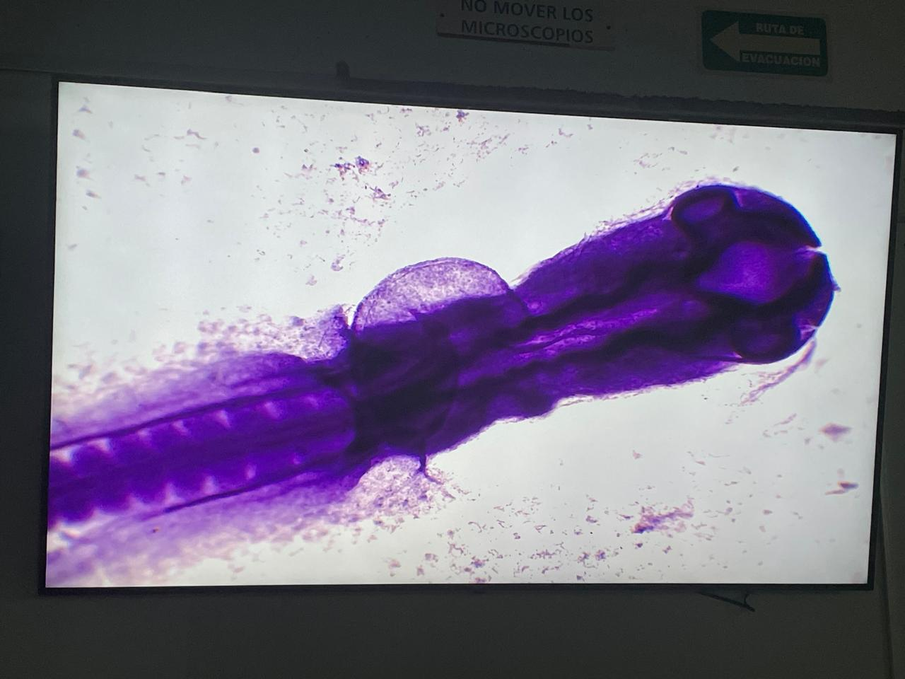

Tengo una gatita llamada Galletita que a pesar de que a veces es un poquito apatica al amor, a mi me encanta estrujarla y llenarla de besitos


Me entusiasma mucho conocer de varios temas, me considero una persona curiosa.

Me gusta escuchar musica en mi tiempo libre, sobre todo a la diosa Adele. Me encanta mucho como el violín le da un upgrade gigante a las canciones.

Me encanta estudiar idiomas por ejemplo ahorita estoy obsesionada con el Alemán y el hermoso acento fránces

A pesar de que no he salido mucho de Aguascalientes, desde que me gané la beca de movilidad de Becalos y BBVA a Inglaterra, debo admitir que me encantó salir de mi país sobretodo por los maravillosos museos que tiene Inglaterra y todos sus atractivos turísticos.


Mientras estuve en Inglaterra descubrí mi fascinación por los museos.


Me encanta tomar un caféito en la tarde y relajarme un poco.